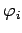

Inhalt Index DeskTop Bronstein

 Algebra und Diskrete Mathematik Klassische algebraische Strukturen Lie-Gruppen
Algebra und Diskrete Mathematik Klassische algebraische Strukturen Lie-Gruppen


Eine kontinuierliche Gruppe G wird LIE-Gruppe genannt, wenn gilt:
| (5.132) |
Die Eigenschaften der Funktionen  (s. n-stellige Operationen), die die Multiplikation in G bestimmen, folgen aus den Gruppenaxiomen:
| (5.134) |